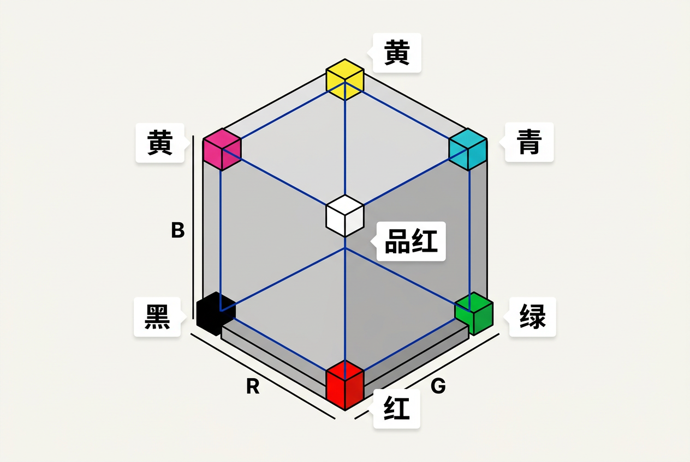
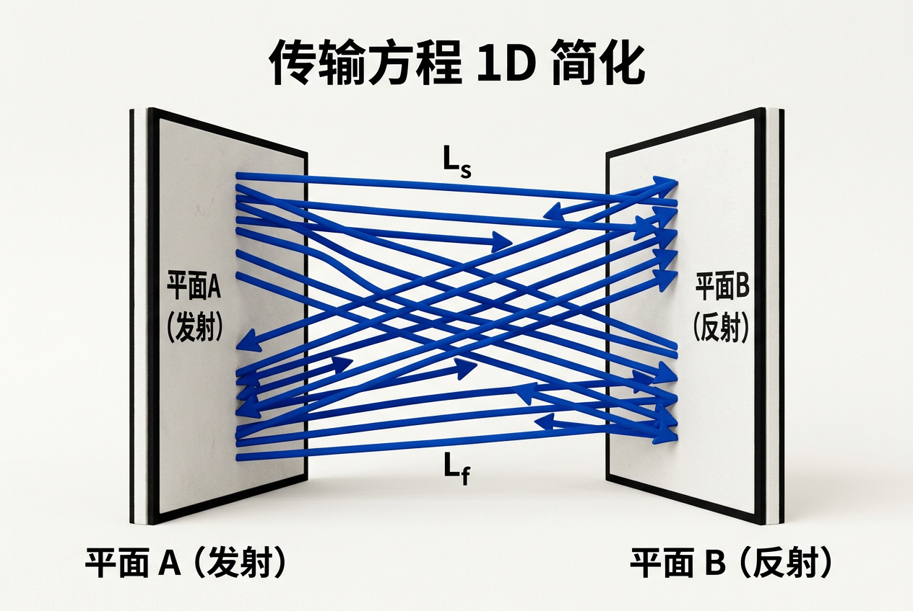
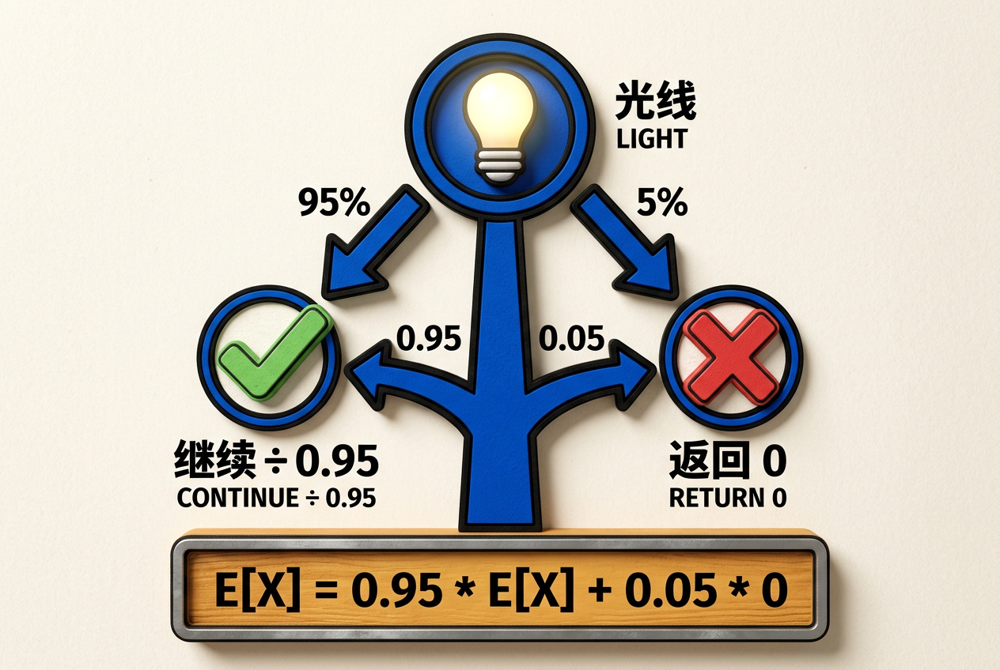
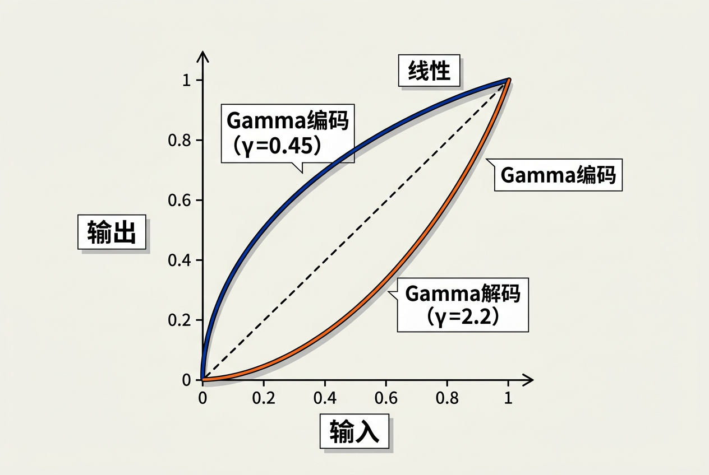

第3章：光栅图像 — 零基础讲义
讲义说明
本讲义基于 Steve Marschner & Peter Shirley 所著《虎书5》第5版第3章（p.63-78）。
本章介绍图像的底层表示——像素、RGB颜色、Alpha合成。所有显示设备（LCD、打印机、相机）都是光栅设备。
本版插画采用 Guizang 材质插画风格重新绘制。
学习目标
- 理解光栅显示设备的原理（LCD/CRT/打印机/相机/扫描仪）
- 理解像素的几何含义和屏幕坐标系统
- 掌握 RGB 颜色模型的基本原理和加色混合
- 理解 Alpha 合成（Alpha Compositing）的工作原理
- 掌握 Gamma 校正的基本概念
- 了解图像存储格式（PNG/JPEG/EXR）的选择
- 掌握基本的图像 I/O 和像素操作
3.1 光栅设备（Raster Devices）
3.1.1 什么是光栅？先解决第一个问题
它解决什么问题？计算机生成的图像最终要显示在某个物理设备上——显示器、手机屏幕、打印机。这些设备都是怎么工作的？它们有一个共同点：都是像素阵列。
光栅（Raster）= 像素的矩形阵列
"Pixel" 是 "Picture Element" 的缩写（图片元素）。所有现代显示设备本质上都是一个像素网格。
生活类比：想象一块巨大的乐高底板——你要用不同颜色的乐高颗粒拼出一幅画。每个乐高颗粒就是一个"像素"。乐高颗粒越多（分辨率越高），你的画就越精细。
那么，哪些设备是"光栅设备"？

| 设备 | 原理 | 特点 |
|---|---|---|
| LCD显示器 | 液晶阵列，每个像素可独立发色 | 最常见的输出设备 |
| CRT显示器 | 电子束扫描荧光涂层 | 早期设备，有余光效应 |
| 打印机 | 逐行扫描沉积墨水 | 没有"物理像素网格"，但本质是光栅 |
| 数码相机传感器 | 感光元件网格采集光线 | 光栅 输入 设备 |
| 扫描仪 | 线性传感器扫描过页面 | 光栅 输入 设备 |
3.1.2 显示分辨率与像素密度
分辨率：水平和垂直像素数。常见分辨率：
- 1920 × 1080（Full HD）= 约200万像素
- 3840 × 2160（4K）= 约800万像素
- 7680 × 4320（8K）= 约3300万像素
- 每个像素由红、绿、蓝三个子像素组成
像素密度（PPI，Pixels Per Inch）：每英寸有多少像素。密度越高，肉眼越看不到单个像素。
- 手机：~400-500 PPI（"视网膜屏"）
- 电脑显示器：~100-200 PPI
- 电视：~40-80 PPI（因为距离远）
因为观看距离不同！手机你拿在眼前20cm处看，电视你可能在3米外看。人眼的分辨率是按"视角"算的——一个距离远、PPI低的屏幕和一个距离近、PPI高的屏幕，在人眼视网膜上的成像可能完全一样精细。这就是为什么苹果说"视网膜屏"是综合考虑了PPI和典型观看距离的。
3.1.3 像素的纵横比
并非所有像素都是正方形——这是一个很多初学者忽略但重要的细节：
- VGA：640×480，正方形像素（1:1）——标准
- NTSC：非正方形像素（10:11）——老式电视标准
- 现代显示器：几乎全部正方形像素（1:1）
为什么会有非正方形像素？老式电视的扫描线间距和行宽不同，导致像素在水平和垂直方向上物理尺寸不一样。如果显示一个正圆形，在非正方形像素的屏幕上就会显示成椭圆。现代显示器已经全部是正方形像素了，但这个历史遗留概念偶尔还会碰到。
3.2 图像、像素与几何（Images, Pixels, and Geometry）
3.2.1 像素坐标系统——一个让人容易混淆的地方
它解决什么问题？你要访问图像中的某个像素——比如第3行、第5列的像素。你需要一个坐标系统来定位它。
图像在内存中是二维数组：image[y][x] 或 image[height][width]
注意！屏幕坐标系和数学课上的坐标系是相反的：
数学课：y 轴向上 ↗
屏幕： y 轴向下 ↘
(0,0) ──── x ────→
│
y
│
↓为什么？历史原因——CRT显示器的电子束是从左上角开始，逐行向右、再逐行向下扫描的。这个"左上角为原点，y向下"的惯例被所有现代图形系统继承下来了。
3.2.2 像素是面积还是点？一个微妙的哲学问题
这取决于你从哪个角度看：
- 采样视角：像素是"一个点的颜色样本"——就像你在一个网格上测量每个交叉点的颜色。这时像素是一个点。
- 显示视角：像素是"一个小方块"——每个像素占据屏幕上的一个矩形区域，发出对应的颜色。这时像素是一块区域。
两种视角都是正确的，取决于上下文。在渲染时（采样），你把像素当点；在显示时，你把像素当方块。
整数坐标 vs 浮点坐标：
- 整数坐标：像素(i, j) 表示第i列第j行的像素。简单直接，但"像素中心"在哪里？
- 浮点坐标：像素(i, j) 的中心在 (i+0.5, j+0.5)。这个偏移很重要——我们会在第4章光线追踪中看到它的影响。
3.2.3 图像在内存中的存储
图像在内存中就是一段连续的字节序列：
R G B R G B R G B R G B ...
| pixel 0 | pixel 1 | pixel 2 | ...| 格式 | 每通道位数 | 每像素字节数 | 应用场景 |
|---|---|---|---|
| RGB888 | 8位 | 3字节 | JPEG/PNG（最常见格式） |
| RGBA8888 | 8位 + Alpha | 4字节 | PNG带透明度 |
| Float32 | 32位浮点 | 12字节 | EXR（HDR——高动态范围） |
| Float16 | 16位浮点 | 6字节 | EXR（半精度HDR） |
计算例子：一张 1920×1080 的 RGBA8888 图像占用多少内存？
1920 × 1080 × 4 字节 = 8,294,400 字节 ≈ 7.9 MB3.3 RGB颜色（RGB Color）
3.3.1 三基色原理
它解决什么问题？人眼有三种视锥细胞，分别对红、绿、蓝光最敏感。所以，任何颜色都可以用三种基本色光的不同强度混合来模拟。
RGB（红绿蓝）= 加色混合模型

计算机显示器使用加色混合：
- R + G + B = 白色（三色全开 = 白）
- 无 R/G/B = 黑色（三色全关 = 黑）
- R + G = 黄色，R + B = 品红，G + B = 青色
生活类比——手电筒：想象你在一个黑暗的房间里，用三个手电筒分别照射红色、绿色和蓝色的光到同一面墙上：
- 只开红色手电筒 → 墙上是红光
- 开红色 + 绿色 → 墙上是黄色光（红+绿=黄）
- 三个全开 → 墙上是白色光
这与绘画的减色混合（颜料混合）恰好相反：
加色（显示器）：黑 → 加 RGB → 白
减色（印刷）： 白 → 减 CMY → 黑3.3.2 颜色值的表示与转换
| 格式 | 范围 | 精度 | 用途 |
|---|---|---|---|
| 8位整数 | 0-255 | 有限（256级） | 常见图片格式（JPEG/PNG） |
| 浮点数 | 0.0-1.0 | 高 | 着色计算（渲染内部） |
| 半精度浮点 | 0.0-65504 | 中 | HDR图像（EXR格式） |
关键转换——这是你每天都会用到的操作：
// 8位整数 → 浮点数
float r = 128 / 255.0f = 0.502 // 约50%强度
// 浮点数 → 8位整数（存文件时）
uint8_t r_byte = (uint8_t)(clamp(r, 0.0f, 1.0f) * 255.0f)3.4 Alpha合成（Alpha Compositing）
3.4.1 什么是Alpha？
它解决什么问题？你想在一张背景图前面叠一张有透明区域的图片（比如一个半透明的窗口、一个带虚影的角色）。Alpha 通道就是告诉计算机"这个像素有多不透明"。
Alpha（α）= 不透明度
- α = 1.0：完全不透明——前景完全盖住背景
- α = 0.0：完全透明——背景完全可见
- α = 0.5：半透明——前景和背景各贡献一半
3.4.2 Over操作——合成的基础

每个符号的含义：
- cf：前景颜色（如红色半透明层）
- cb：背景颜色（如白色纸张）
- αf：前景的透明度（如0.5 = 半透明）
- out：最终显示的颜色
生活类比：在半透明红纸上放一张白纸——
- 完全不透明（α=1.0）→ 全红（纸完全被挡住）
- 半透明（α=0.5）→ 粉红（红+白各一半）
- 完全透明（α=0.0）→ 白纸（红纸完全不挡）
数字例子：
前景：红色 cf = (1.0, 0.0, 0.0)，αf = 0.5
背景：白色 cb = (1.0, 1.0, 1.0)
out.r = 0.5 × 1.0 + (1-0.5) × 1.0 = 0.5 + 0.5 = 1.0
out.g = 0.5 × 0.0 + 0.5 × 1.0 = 0.5
out.b = 0.5 × 0.0 + 0.5 × 1.0 = 0.5
最终颜色 = (1.0, 0.5, 0.5) = 粉红色 ✓3.4.3 预乘Alpha
很多渲染系统使用预乘Alpha格式——存储 (αR, αG, αB, α) 而不是 (R, G, B, α)。好处是合成公式更简单：
// 非预乘
out.r = αf * cf.r + (1-αf) * cb.r
// 预乘（cf已经乘以αf了）
out.r = cf.r + (1-αf) * cb.r // 少一次乘法！3.4.4 常见的合成模式
| 模式 | 公式 | 用途 |
|---|---|---|
| Over | αf·cf + (1-αf)·cb | 前景叠背景（最常见） |
| Under | (1-αb)·cf + αb·cb | 背景叠前景 |
| Add | cf + cb | 粒子、火焰（叠加发光效果） |
| Multiply | cf × cb | 暗化、遮罩 |
| Screen | 1-(1-cf)×(1-cb) | 发光、亮化效果 |
3.4.5 合成的可结合性
Alpha合成是可结合的（Associative）：
这意味着你可以分步合成再合并——这是分层渲染（Layer-based compositing）的理论基础。每个物体单独渲染成一层，最后在合成阶段统一组合。
由于合成的可结合性，结果是一样的。但是注意——这只是在标准的Over操作下成立。如果你用了Add模式或其他合成模式，可结合性不一定成立。
3.5 Gamma校正
3.5.1 问题的起源——CRT的物理特性
它解决什么问题？你给显示器输入 (0.5, 0.5, 0.5) 的中灰色，但显示器显示出来的物理亮度不是50%——只有大约22%。这是因为CRT显示器的物理特性：输出亮度 = 输入电压的γ次方，其中γ ≈ 2.2。

生活类比——给你的感觉：假设你在Photoshop里给一个图层设置50%的透明度，你期望看到的是"一半背景一半前景"的效果。但因为Gamma的存在，如果你在未做校正的显示器上看，实际效果只有22%的前景+78%的背景——看起来比你设想的要暗很多。
3.5.2 解决方案：存储Gamma (Encoding Gamma)
因为显示器有 Gamma = 2.2，图像在存储时需要预先做"反Gamma"（Gamma编码），使最终的显示亮度等于原始亮度：
当显示器显示时：
逐步拆解——用一个数字例子：
你想在屏幕上显示 50% 的物理亮度（0.5）
→ 因为显示器有 Gamma = 2.2
→ 如果你直接存储 0.5，显示器实际显示 0.5^2.2 ≈ 0.218（只有22%！）
→ 所以你需要存储 0.5^(1/2.2) ≈ 0.73
→ 显示器显示 0.73^2.2 ≈ 0.5 ✓（正好是你想要的50%）
所以：文件里存的 0.73 才对应屏幕上的 50% 亮度。
这就是为什么 sRGB 图像看起来"比线性空间更亮"——因为像素值已经被"压缩"了。3.5.3 sRGB Gamma 的精确公式
现代系统使用 sRGB 标准，不是简单的 2.2 幂函数——它在暗部使用线性段来避免数值问题：
// sRGB → 线性（解码：从文件到渲染）
c_linear = c_srgb / 12.92 if c_srgb ≤ 0.04045
c_linear = ((c_srgb + 0.055) / 1.055)^2.4 if c_srgb > 0.04045
// 线性 → sRGB（编码：从渲染到文件）
c_srgb = c_linear * 12.92 if c_linear ≤ 0.0031308
c_srgb = 1.055 × c_linear^(1/2.4) - 0.055 if c_linear > 0.0031308画面整体会偏暗，特别是中间调部分。因为显示器自动应用了 Gamma=2.2，把线性值又"压缩"了一次。就好像你在照片上又加了一层暗化滤镜。正确的做法是在 Shader 最后做一次 sRGB 编码。
3.6 图像文件格式
3.6.1 常见格式对比
| 格式 | 压缩 | Alpha | HDR | 用途 |
|---|---|---|---|---|
| PNG | 无损 | ✓ | ✗ | UI/图标/截图 |
| JPEG | 有损 | ✗ | ✗ | 照片/网络 |
| GIF | LZW | ✓(1bit) | ✗ | 动画 |
| BMP | 无 | ✓ | ✗ | 旧格式 |
| EXR | 有损/无损 | ✓ | ✓ | HDR/特效 |
| TGA | 无/RLE | ✓ | ✗ | 3D纹理 |
如何选择？
- 需要透明背景 → PNG
- 照片分享 → JPEG（体积小）
- HDR数据 → EXR（浮点精度）
- 简单动图 → GIF
3.6.2 JPEG压缩原理简介
RGB → YCbCr // 把颜色分解为亮度(Y)和色度(Cb, Cr)
↓
4:2:0 降采样 // 色度分辨率降到1/4（人眼对色度变化不敏感）
↓
8×8 DCT // 频域变换——把图像块转成频率系数
↓
量化 // 高频系数用更粗的精度存储（丢掉人眼不敏感的细节）
↓
Huffman/行程编码为什么JPEG能做到10:1的压缩比而几乎看不出质量损失？因为它在第二步（色度降采样）和第四步（高频量化）中丢弃了人眼最不敏感的信息。这是"感知编码"（perceptual coding）的经典案例。
3.7 图像I/O编程要点
// 读取图片到内存
image = read("photo.png")
width = image.width, height = image.height
data = image.pixels // [R,G,B,R,G,B,...] 或 [R,G,B,A,R,G,B,A,...]
// 逐个像素处理
for y in 0..height-1:
for x in 0..width-1:
r = image.get_pixel(x, y).r
g = image.get_pixel(x, y).g
b = image.get_pixel(x, y).b
// 处理像素...
image.set_pixel(x, y, Color(r', g', b'))
// 写入文件
write(image, "output.png")全章总结
核心洞察：像素是图形学最基本的"原子"单位——掌握了光栅设备、RGB颜色模型、Alpha合成、Gamma校正和图像格式，就掌握了图像在计算机中存储和显示的完整链路。
| 概念 | 一句话 | 图形学应用 |
|---|---|---|
| 光栅 | 像素阵列——所有显示/输入设备的共同基础 | LCD、CRT、打印机、相机 |
| 像素坐标 | 原点在左上角，y轴向下 | 所有图像/屏幕操作的基础 |
| RGB | 加色混合—红+绿+蓝=白 | 显示器发色原理 |
| Alpha | 不透明度——α=1不透明，α=0透明 | 图像合成、UI、特效 |
| Over操作 | out = αf·cf + (1-αf)·cb | 前景叠背景的核心操作 |
| Gamma校正 | sRGB↔线性的双向转换 | 所有PBR渲染管线必须处理 |
| 图像格式 | PNG（无损透明）vs JPEG（有损照片）vs EXR（HDR） | 根据场景选择合适的格式 |
"渲染内部永远是线性空间（浮点0-1），输入输出时做Gamma校正——这是图形学的第一课，也是最容易被忽略的一课。"